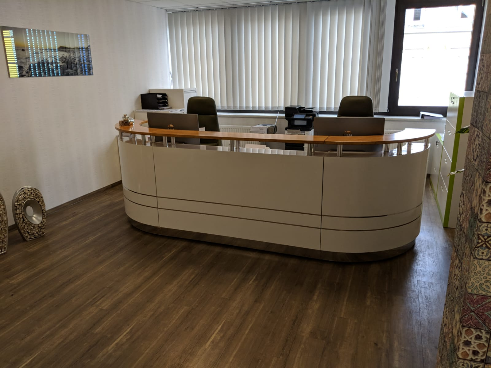
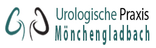
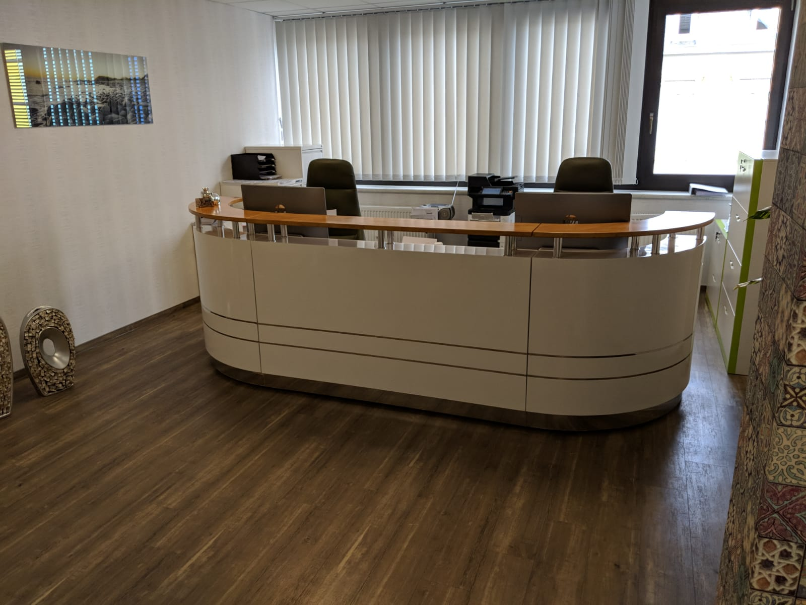

|  | ||||||||
Willkommen in der Urologischen Praxis Mönchengladbach |
||||||||
|
So erreichen Sie uns
Telefon 0 21 61 / 30 93 0 77 Telefax 0 21 61 / 30 93 0 78 E-Mail upm.praxis@gmail.com Sprechstundenzeiten
Und nach Vereinbarung. Bitte vereinbaren Sie einen Termin!  |